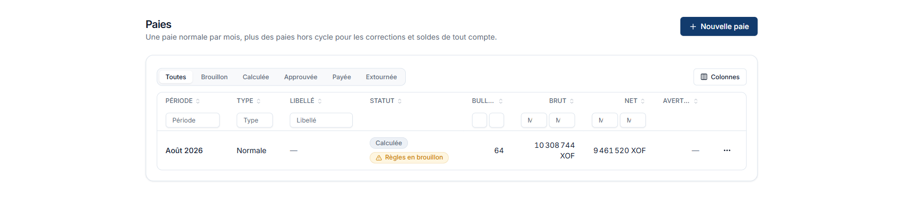
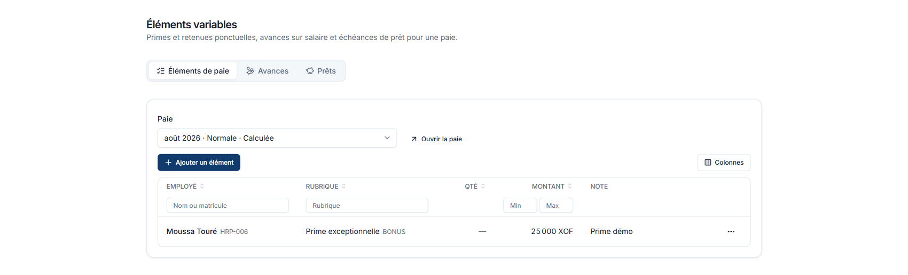
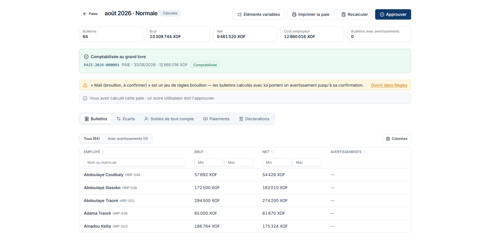
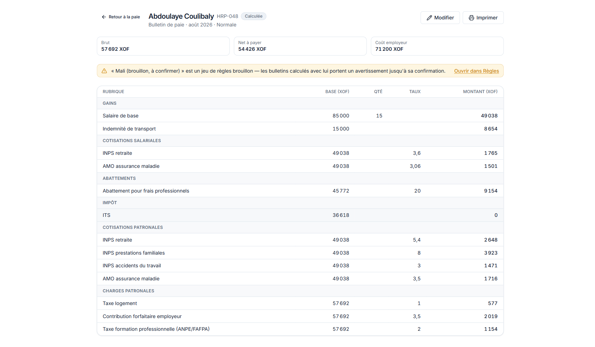

Avant tout : une paie passe par cinq étapes, toujours dans cet ordre.
On ne peut pas sauter une étape.
Dans le menu à gauche : PAIE → Paies

123
Les boutons trient la liste : Brouillon, Calculée,
Approuvée, Payée, Extournée.
La colonne STATUT dit où en est la paie du mois.
Calculée veut dire : les chiffres sont faits, mais personne n'a encore dit oui.
Les colonnes BRUT et NET : le brut est avant les retenues,
le net est ce que la personne reçoit vraiment.
AttentionExtournée veut dire : la paie a été annulée après coup.
Cela laisse une trace exprès, pour que l'on sache ce qui s'est passé.
C'est réussi quand…
Vous savez dire, en lisant le statut, si la paie du mois est finie ou non.
Tâche 2
Ajouter une prime ou une avance
À faire AVANT de calculer la paie. Après, il faut tout recalculer.
Dans le menu à gauche : PAIE → Éléments variables

123
L'onglet Éléments de paie : les primes et les retenues du mois.
Les onglets Avances et Prêts : l'argent déjà donné à la personne,
qui sera retiré de son salaire.
Cliquez Ajouter un élément, puis choisissez l'employé et la rubrique.
Attention
Si la paie du mois est déjà Calculée, une prime ajoutée maintenant
n'est pas comptée. Il faut cliquer Recalculer sur la paie.
C'est réussi quand…
La ligne apparaît dans le tableau, avec le nom de l'employé et le montant.
Tâche 3
Ouvrir la paie du mois
Pour voir les totaux et vérifier avant de payer qui que ce soit.
Dans le menu à gauche : PAIE → Paies, puis cliquez la ligne du mois.

1234
Les cinq grands chiffres : le nombre de Bulletins, le Brut,
le Net, le Coût employeur, et les bulletins qui portent un avertissement.
Le cadre vert Comptabilisée au grand livre : la paie est déjà
enregistrée en comptabilité, avec son numéro d'écriture.
Le cadre orange prévient quand les règles de calcul sont encore
en brouillon : les chiffres peuvent changer.
Les onglets Bulletins, Écarts, Paiements et
Déclarations : la liste de tout le monde, les différences avec
le mois d'avant, et les papiers pour l'État.
C'est réussi quand…
Vous voyez le nombre de bulletins et les totaux en haut de l'écran.
Tâche 4
Approuver la paie
C'est le moment où l'on dit : « ces chiffres sont bons, on peut payer ».
Sur la page de la paie, le bouton bleu en haut à droite.
12
Cliquez le bouton bleu Approuver, tout en haut à droite.
Lisez d'abord la phrase grise au-dessus des onglets.
Elle dit qui a calculé la paie, et qui doit l'approuver.
Attention — la règle des deux personnes
Le programme écrit : « Vous avez calculé cette paie : un autre utilisateur
doit l'approuver. »
Celui qui calcule ne peut pas approuver lui-même. C'est exprès :
deux paires d'yeux valent mieux qu'une quand il s'agit de l'argent des gens.
C'est réussi quand…
Le statut de la paie passe de Calculée à Approuvée.
Tâche 5
Lire le bulletin d'une personne
Pour répondre à un employé qui demande pourquoi il a reçu cette somme.
Sur la page de la paie, onglet Bulletins, puis cliquez un nom.

123
En haut : le nom de la personne, son matricule, et le mois du bulletin.
Les trois chiffres : le Brut, le Net à payer
(la somme que la personne reçoit), et le Coût employeur.
Le bouton Imprimer sort le bulletin sur papier, pour le remettre
à l'employé.
Attention
Un bulletin est un papier personnel. Ne le montrez qu'à la personne concernée
et à son chef.
C'est réussi quand…
Le nom de l'employé et son Net à payer s'affichent à l'écran.